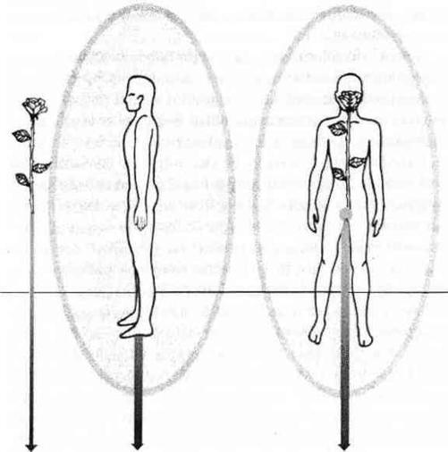

AURAYI KORUMAK
Eğer daha önce başka bir metafizik çalışma yaptınızsa o zaman psişik koruma sistemleri olan “duvar”, “ayna” ya da “beyaz ışığa” aşina olabilirsiniz. Bunlar bazılarının kendilerini başkalarından ve yollarına çıkabilecek herhangi bir “şeytani” enerjiden korumak için kullandıkları bariyerlerdir. Bana göre bu bariyerlerin faydadan çok zararı vardır.
Duvar gerçekten de duvara benzeyen ve tuğlalardan yapıldığı hissini uyandıran bir enerji bariyeridir. Duvarı kullanan kişiler genellikle dünyaya bakışları sert ve esnek olmayan insanlardır. Duvar asla geçilemeyecek bir savunma olarak dikilmiştir. Ne yazık ki çoğu canlı mücadeleden hoşlanır ve bu yüzden ışığa giden pervaneler gibi duvar kullanıcılarına doğru giderler. Aslında yalnız bırakılmak istemelerine rağmen duvar kullanıcıları kendilerini dengesiz ve yönlendirici insanlarla çevrili bulurlar. Duvar kullanıcıları savunma sistemlerinin diğer insanlara cazip ve/veya aşağılayıcı geldiğinin farkında değildirler.
Duvar kullanıcıları çok arzu ettikleri yalnızlığı yaşayamazlar ve çoğu zaman “Bu deli insanlar/işler/ilişkiler beni nereden buluyor? Alnımda mı yazıyor?” diye şikayet ederler.
Aslında herkes altıncı hisleriyle kaba enerji bariyerlerini hissetme yeteneğine sahip olduğundan duvar kullanıcıları gerçekten de alınlarında “Gel bana dalaş!” yazısı ile gezerler.
Ayna tıpkı adı gibi kendisine gelen enerjileri yansıtan ve duvardan daha az aşağılayıcı bir bariyerdir. Söylemi şudur: “Bana ne gönderirsen sana aittir, yani ben seninle iletişim istemiyorum.” Ayna sadece yarı etkilidir. Çoğu kimse iletişim kurma çabalarının aynen geri geldiğini görünce vazgeçerken geri kalanlar ille de kalıp çabalarını devam ettirirler. Bir aynanın arkasında yaşamak kişiyi çok yalnız kılar, çünkü aynanın arkasına geçebilen çok az şey vardır. Ayna eğer spiritüel narsistleri cezbederse rahatsız edici bile olabilir çünkü onlar yakınlarda dolanıp kendi akislerini seyretmeye bayılırlar.
Ayna da duvar gibi ölü ve kırılgandır. İkisinde de hiç insani bir taraf olmadığı için ne canlılıkları ne de mizah yanları vardır. İkisi de bu kalıplaşmışlıkları yüzünden auranın akıcılığı ve sağlığı için zararlıdır.
Beyaz ışık hepten başka bir hikayedir. Beyaz ışık, her tür koruma için kullanılan beyaz çok parlak bir aura balonudur. Bu fikir, beyaz ya da gümüşi bir aura içinde görülen ruhani rehberlerden ve meleklerden esinlenerek ortaya çıkmıştır. Bu tür yaratıkların olağanüstülüğü bir kitap doldurabilir, bu yüzden bu konuya kısaca değinip geçeceğiz. Bu konuyu anlayabilmek için, ölüm sonrası yaşam, reenkarnasyon, bilinç ötesi, ruh kardeşleri, karma ve akaşik kayıtlar gibi konularda bilgi sahibi olmak gerekir.
Rehberler ve melekleri kısaca açıklamak gerekirse dünya üzerindeki hayatımızı izlemeyi ve bize yardımcı olmayı kabul etmiş varlıklardır. Genellikle edinmek istediğimiz bilgi ve bizim aramızda, bizimle tanrı arasında ve bizimle ve oluşabilecek ani zihin sarsıntılarımız arasında arabuluculuk ederler. Şok ve geçiş anlarında rehberler bizi beyaz ya da gümüş renkli koruyucu bir perdeyle sarmalarlar. Bu koruyucu beyaz örtü inanılmaz derecede iyileştiricidir ama kısa zamanda yok olarak kendi doğal renklerimizin ve enerjilerimizin yeniden ortaya çıkabilmesine olanak sağlar.
Kişiler kendi başlarına çok amaçlı bir beyaz ışık korunma bariyeri yarattıklarında (ya da daha kötüsü başkalarına yolladıklarında) beyaz ışık iyidir, daha fazla beyaz ışık daha da iyidir diye düşündüklerinde auranın neredeyse bir ölü katılığına girmesine neden olurlar. Aura sürekli olarak tek bir renk saçmak için yaşadığı sıkıntıdan katılaşır ve sağlıksızlaşır. Beyaz ışık içindeki kişiler kısa bir zaman sonra kendilerini yeryüzü enerjisi, kendi enerjileri ve diğer insanlardan soyutlanmış bulurlar. Hatta rehberler bile kişiye ulaşmakta zorluk çekerler çünkü beyaz ışığın görevi her şeyi dışarıda tutmaktır. Kişisel gelişim dışardan hiçbir şey alınmadığında durur.
Beni yanlış anlamayın; beyaz ışık çok önemlidir. Acil durumlar ya da hastalıklar için iyidir ama her zaman kullanılacak bir araç değildir. Kendi meditasyonlarımda ben artık asla beyaz ışık kullanmıyorum. Onu kullanmayı rehberlerime bırakıyorum.
Bana bu gibi sınırlamalarla tedaviye ya da ders almaya gelen kişilere hemen odaklanarak bunun altında yatan korkuyu bulmaya çalışıyorum. Bu tür korunmaya gereksinim duyan insanlar genellikle kötü ve psikolojik bir tehlikeden korkarlar; büyük bir olasılıkla ikisinden de fazlasıyla tatmışlardır. Biliyorum çünkü auramı tanımlayana ve topraklayana kadar ben de bunu yaşadım. Şu anda öğrenmekte olduğumuz çalışmayla sevdiğim görüntülere ulaşabiliyorum; bu görüntüler bana kötülük ve tehlike ile dolu ruhlar dünyasında yaşamak için yardımcı oluyor.
Çocukken, iki ya da üç yaşından itibaren pek çok kimse tarafından taciz edildim. Korku ve kötülüğe çok yatkın olarak büyüdüm. Spiritüellikle ilk kez on yaşında tanıştığımda kötülüğün her seviyesi ile ilişkiye geçmeyi amaçlıyordum. Bütün öğretmenlerim Beyaz Kardeşlik üyesiydi ama ben bir yerlerde Kara Kardeşlik olduğunu ve onlara karşı yapılacak büyük, kıyamet benzeri bir savaşa katılacağıma inanıyordum.
İç yolculuklarımda tüm sözü edilen koruma sistemlerini ve aklıma gelen başka her şeyi “kötü tiplere” karşı korunmak için kullandım. Kimi zaman bunlar işe yaradı ama çoğu zaman işe yaramadı. Kendimi pek çok psişik acil durumun tam ortasında buldum. Neyse ki bu acil durumlar beni bir psişik çalışma merkezinin kapısına yönlendirdi. Orada kötülüğe olan inancımın gerçekle alakası olmadığını ama benim hayat görüşümle alakalı olduğunu en nihayet anladım.
Ben Tanrı’nın kimseyi koruyabileceğine inanmıyordum çünkü (bana saldırılırken neredeydi?) sürekli olarak tehlikelerle dolu bir dünyada yaşıyordum. Bilgiden ve bağlantılardan habersiz kendi başıma yolculuk yaparken ve korku temelli korunma perdeleri ile sarmalanmışken iç ve dış dünyada sağa sola toslamam kaçınılmazdı. Sürekli olarak bilinçaltımdaki korkularla yaşıyor ve inanılmaz ürkütücülükteki deneyimleri kendime bir mıknatıs gibi çekiyordum. Olumlu, güvenli ve hayat dolu insanları ve mesajları tanıyamıyordum. Böyle mutlu bir deneyime vaktim yoktu. Hakikati ortaya çıkarmak ve kötüyü yok etmekle çok meşguldüm! Aklımı kaybetsem ve hatta bu yolda ölsem bile gezegeni iyileştirecektim. Bir misyonum vardı!
Şanslıydım, şu an size öğretmekte olduğum yetenekler sayesinde bu misyonum kısa sürdü. Enerjimi tanımlamayı, topraklamayı ve temizlemeyi öğrendiğimde korunma perdelerim yavaş yavaş yok oldu. Kötü insanlara ve deneyimlere eskisi kadar çok rastlamamaya başladım. Sanırım artık eskisi gibi acıklı bir dramın parçası olmadığım için beni hırpalamak onlar için de eskisi kadar eğlenceli değildi.
Başlangıçta, sürekli tehlike içinde olmanın ve kötü ruhları görmekten korkmanın heyecanı olmadan yaşamak bana çok boş geldi. Hatta içim sıkıldı! Ama her nasılsa kararlılık gösterdim, çünkü yeni öğrendiğim yetenekler beni daha fazla nefes alabileceğim yeni bir manevi düzeye sokuyordu. Kafamın içinden ve auramın ardından bir parçası olmadan kaosu seyredebiliyordum.
Kısa zamanda huzursuz insanları iyileştirmekte ustalaştım. Şizofreninin, halisünasyonların, paranoyanın ve hayali seslerin kaynağını bulmak benim için çok kolay; hatta rahatlatıcıydı. Eğitimli bir şifacı olarak kendimi ve şifa verdiğim kişileri yeni öğrendiğim korunma yöntemleri ile deliliğin ortasından güvenli bir yere ulaştırabiliyordum.
Kendi üzerimde çalıştığımda ve başkalarını dehşet verici korkularından kurtardığımda çok önemli bir şey öğrendim. Gördüm ki, bir zamanlar ürkütücü, deli, kötü ve şeytani diye adlandırdıklarım aslında herkesten çok daha zavallıydılar. Tıpkı benim gibi derin bir kuyu dolusu kederleri ve korkusuz görüntülerinin altında hayal bile edilemeyecek kadar büyük bir kaybolmuşluk duyguları vardı. Beni korkutmak ve kontrol etmek için yaptıklarına tepki vermeyi bırakınca pek çok ortak noktamız olduğunu keşfettim. Korkunç şeyleri, eve gidip güven içinde olmak isteyen kaybolmuş korkmuş çocuklar olarak görebiliyordum. Sınırları içinde hapis olmuş kişileri anladıkça kötülük benim için basit bir kavram haline dönüştü.
Bir süre şeytan çıkarıcılık da yaptım. Yardım ettiğim her acı çeken ruhta kendi korkularımdan biraz daha sıyrıldım. Bugün o tür karnaval tipi psişik iyileştirme ile ilgilenmiyorum ama o zamanlarda bunun bana çok yardımı olduğu kesin. Bugünlerde tüm şifa enerjimi kendime yardım için kullanıyorum ve başkalarına kendileri ile iletişim kurmalarını öğretmeye çalışıyorum.
Artık her birimizin iyi ya da kötü olmayı seçtiğini biliyorum; karanlık güçleri tanımak ve onlardan uzak durmak benim elimde. Herkesin yapabileceği ve seçebileceği gibi. Kendime ve iyileşmeme özen gösterirsem Tanrı’ya daha yakınlaşacağımı; korku yaratan varlıklardan uzaklaşacağımı öğrendim. İç dünyama döndüğüm zaman Tanrı’nın ve güvenliğin her zaman orada beni beklemekte olduğunu gördüm.
Şu anda kullanmakta olduğum korunma sistemlerini insanlardan ve ruhlardan korktuğum için değil, onlara yardımcı olmak için kullanıyorum. Başkalarından kendimi uzaklaştırmak istediğimde onları tiksindirici olarak düşünmüyorum. Bir zamanlar benim de olduğum gibi yollarını ya da inançlarını kaybetmiş olduklarını düşünüyorum. Devasa, karmaşık ve inanılmaz bariyerler diktiğimdeyse hiçbirimizi korumuş olmuyorum. Sadece yolculuğumuzu engelliyorum; dikkati engellerime çekiyorum ve iyileşmemizi geciktiriyorum. İnsanlarla arama mesafe koymak için bunun yerine artık kendi bedenimde kendi auramın arkasında durmayı öğrendim.
Bir müdahale hissettiğimde (ki o zaman sağlıklı auram renk ve şekil değiştirerek beni hemen haberdar ediyor) ya da olaylar ve insanlar tahammülümün sınırlarını zorlamaya başladığında bir zamanlar olduğu gibi ne korkuyorum ne de deliye dönüyorum. Bir koruma sembolü kullanıyorum ve kötülüğü benden uzaklaştıracak güçlü küçük bir şifa uyguluyorum. Bunun içinde ne korku var, ne de aşağılama. Yaşam gönderiyorum, sevgi dolu hediyeler, çiçekler yolluyorum.
Çiçekler her zaman sevginin, saygının, karşılamanın ve kabullenmenin sembolü olmuştur. Diğer hediyelerin de anlamları olmasına karşın, hiçbiri yaşayan sağlıklı çiçeklerin taşıdığı ve ilettiği önem ve ilgiyi yansıtmaz. Çiçekler bir doğumu kutlar ya da bir ölüme yas tutar. Tebrik ederler, avuturlar ya da şefkat, hayranlık ve dostluk göstermek için kullanılırlar. Hatta bir ilişkinin bittiğini bile anlatabilirler. Çiçeklerin ve yeşilliklerin kabul edilmiş evrensel simgesel değerleri onları kişisel koruma ve başkalarıyla iletişim için en doğru semboller kılar.
Günlük hayatta bu tür yaşayan hediyeler genellikle düşüncenin ve bağlılığın sembolü olarak kabul edilir. Aynı şey enerjik ya da spiritüel dünya için de geçerlidir. Çünkü çiçekler ketumdur; saldırgan değildir. Bu yüzden kullanımları kişinin korku duymamasına ve korku dolu hatıraları çekmemesine neden olur. Tam tersine çiçeklerle korunma başkalarının korkusunu da yatıştırır.
Canlı, renkli bitkilerle yaratacağınız korunma sistemi çok basittir; öyle basittir ki işlediğine inanmak zordur. Başlangıçta müthiş duvarlarımı, aynalarımı ve beyaz ışıklarımı küçük çiçekler, yeşillikler ve ağaçlarla değiştirmek bana çok zor geldi. Ancak kısa sürede, bir zamanlar kullandığım kocaman engeller yerine basit ama etkin bahçe aletlerimi kullanmayı tercih ettiğimi gördüm. Benim yaşayan, büyüyen korunma sembollerim korkudan uzaklaşmanın anahtarıydı.
Yaratacağınız ilk canlı korunma sembolü “nöbetçi” olacak. Görevi sizin önünüzde durmak, tanıştığınız her kişiyle selamlaşmak ve size gelen enerjiyi topraklamaktır. Her zaman sizinle olacak ve auranızın dış tarafını koruyacaktır. Ancak ilk olarak biraz alıştırma yapalım ve kreasyonunuzun ilk parçasını tanıyalım; hayali bir gül.
İLK GÜLÜNÜZ
İlk gülünüzü yaratmak için: Oturun, kendinizi topraklayın ve kafanızın içindeki odaya gidin. Auranızı ışıklandırın ve pürüzsüz bir elips olduğundan emin olun. Öyle değilse o zaman topraklayın ve önce bir aura iyileştirme seansı uygulayın. Auranızın sınırlarının ve birinci çakra topraklama kordonunuzla arasındaki bağın farkına varıp bugün onların aynı renkte mi yoksa zıt renklerde mi olmaları gerektiğine karar verin. Karar sizin.
Gözlerinizin arkasından ve topraklanmış bedeninizden auranızın sınırlarına bakın. Yüzünüzden bir kol mesafesinde olmalıdır. Aklınızda kenarı iyice düşünün ve o kenarda büyük uzun saplı bir gül hayal edin. Bu hayali gülün taç yapraklarını, renkli yapraklarını ve dikenlerini görün. Rengine; goncasının açıklığına ve ne yana baktığına karar verin. Yaratmış olduğunuz şey şu anda ve buradaki ruhunuzun grafik tasviridir.
Gülü bir dakika boyunca inceleyin. Çünkü korunmanız için böyle bir gül kullanacaksınız; onu koruyucu özelliklerle yeniden yaratmalısınız. Ancak şu anda sadece her bir parçasının ne anlam taşıdığını ve size ne ifade ediyor olduğunu bilmenizde yarar vardır. Gülleri anlayabilmek için birkaç genel kural;
Boy ve Uzunluk
Size büyük ve uzun saplı bir gül yaratmanızı söyledim ama ölçü ya da örnek vermedim çünkü sizi etkilemek istemedim. Aklınıza ilk gelen gülü kullanmanızı arzu ettim çünkü aklınıza gelen ilk gül sizin ruhunuzu en iyi yansıtacak gereçtir.
Yarattığınız gül sizin dünyada kaplamak istediğiniz yerin büyüklüğü ile bağlantılıdır. Eğer yarattığınız gül burnunuz ve göbek deliğiniz arasındaki mesafe büyüklüğünde ise o zaman dünyaya uyum sağlamışsınız demektir. Eğer gülünüz bundan daha büyükse enerjinizin ya da kişiliğinizin çevrenizdeki olayları nasıl yönettiğine bir göz atmalısınız. Çok büyük bir gül çevrenizde yükselmenizin zamanının geldiği ve mücadele olmayan bir ortamda yeteneklerinizin ve yapabileceklerinizin ziyan olduğu anlamına gelebilir.
Eğer gülünüz normalin altında bir boydaysa gelişiminizi engelleyen kısıtlayıcı bir dünyada yaşadığınız sonucuna varılabilir. Yapmanız gereken tıpkı gereğinden fazla büyük bir gül yaratmış kişi gibidir. Yukarı ve dışarıya doğru açılmanız ve gelişmeniz gerekir. Kalbinizdekileri anlatabileceğiniz ve size güvenli bir ortam yaratacak insanları bulma zamanı gelmiş demektir. İçinde bulunduğunuz ortam sizi engellemektedir.
Gül goncanızın boyu ve açıklığı: Bu özellikler sizin şu anda kendinize ait spiritüel bilgileri dinlemeye ne kadar hazır olduğunuzun göstergesidir. Goncanızın boyu şu andaki spiritüel kapasitenizi; açıklığı ise bu bilginin ne kadarını kullandığınızı gösterir.
Kocaman ama kapalı bir gonca olağanüstü bir spiritüel kapasiteyi ama onu kullanmaktaki çekinceyi gösterir. Tamamen açık küçük bir goncanız olabilir ve bunun anlamı da yaşam şeklinizin size fazla fırsat vermediği halde sizin, elinizdeki bilgiye sıkı sıkı sarıldığınızı gösterir.
Eğer gülünüz henüz bir gonca ise bu yeni baştan başladığınız ve büyük olasılıkla hayatınızdaki gereksiz pek çok şeyi tekrar açılmadan önce temizliyor olduğunuz anlamına gelir. Eğer gülünüz tamamen açıksa bu sadece ve sadece spiritüel bilginize dayanarak fiziki hayatınızı nerdeyse hiçe saydığınız anlamına gelir. Neden? Eğer fiziksel hayatınız size bu kadar az destek sağlıyorsa artık belki de biraz değişiklik yapmanın zamanı gelmiş demektir; diyetinizde ya da spor düzeninizde, kariyerinizde ya da ilişkilerinizde ya da çalıştığınız ve yaşadığınız yerlerde.
Gülün sapının uzunluğu: Bu sizin fiziksel hayatınıza ve yeryüzüne olan bağınızı gösterir. Aynı zamanda şimdiki zamandaki topraklama yeteneğinizin ölçüsüdür. Çok uzun bir sap iyice topraklandığınızı gösterirken uzun bir sapın sonundaki küçük ya da sıkıca kapalı bir gonca ruhunuzla bedeniniz arasındaki ilişkinin yoğun bir şekilde bedeninize bağlı olduğunu gösterir. Bu da güvensizliğin ya da spiritüel dünyaya karşı korkunun veya Tanrı’ya inançsızlığın belirtisi olabilir.
Çok kısa bir sap şu anda topraklanmaya karşı isteksizlik işaretidir. Kısa bir sap aynı zamanda yetersiz fiziksel alıştırma ya da kötü beslenme ve sağlıksız bir bedene işaret eder. Sağlıklı bedenler doğal olarak topraklanır.
Kısa bir sap ucunda tamamen açılmış bir gül ise ruhunuz ile bedeniniz arasındaki ilişkinin yoğun bir şekilde ruhunuza bağlı olduğunu gösterir. Bunun anlamı karmaşık, yetersiz ya da tehlikeli bir fiziksel varoluş; yaşamayı çok da istemediğiniz bir hayat yaşadığınızdır. Eğer gülünüz anlattığım gibiyse topraklanın! Eğer bedeninizin içinde değilseniz ona yardımcı olamazsınız ve eğer hayatınızın içinde yaşamazsanız gerekli değişiklikleri yapamazsınız. Topraklanın ve ilerleyin!
Renk
Renklerin olası anlamları üzerinde “Aurayı Yorumlamak” bölümünde kısaca durdum ama bunu yaparken pek de hevesli değildim. Renk konusu o kadar değişkendir ki bana “Kırmızı öfkedir” demek çok saçma geliyor. Kırmızı kişinin kültürüne göre her anlama gelebilir, çok kişiye çok farklı anlamlar arz eder.
Küçük bir örnek vereyim. Bizim kültürümüzde yas koyu renkler ve siyah tarafından temsil edilirken bazı kültürlerde canlı renklerle, bazen de beyazla simgelenir. Bu kültürlerde bizim ağır başlı siyah cenaze kostümümüz hakaret olarak algılanabilir. Renklerin anlamlarını kesin olarak belirtmek mümkün değildir.
Ancak rengin tonu ve yoğunluğu farklı bir şeydir çünkü duygusal yoğunluğu ve katılımı belirtir. Eğer gülünüz çok açık renk ya da pastel ise yenilik işareti olabilir. Daha yoğun renkler canlı bir belirginliği ve çok koyu renkler acımasız bir inatçılığı gösterir.
Ebruli renkler ya aksiyon ya da farklı seviyelerden bilgiyi yansıtırken ışıldayan renkler büyük bir spiritüel bilgi akışı anlamına gelebilir. Bunun ötesinde gülünüzün renginin anlamı sizin yorumunuza kalmıştır.
Yön ve Yaş
Taç yapraklarınız ne yöne bakıyor? Eğer sizden öteye doğru bakıyorsa anlamı cevaplarınızı bir başkasının hayatında aradığınızdır. Şu anda ruhsal gelişiminiz için bir kitap yorumlamaktasınız, gülünüz bu kitaba dönük olmalıdır ya da yukarıya dönük olmalıdır. Daha fazla topraklanmaya ihtiyacınız varsa yere dönük olan gülünüz sizden talimat bekliyorsa size dönük olacaktır.
Gülünüz kaç yaşında? Taze bir gül mü? Eğer öyleyse, son zamanlarda ruhsal değişim ve gelişim yaşamışsınız demektir. Gülünüz yaşlı ve solgun mu? Bunun anlamı yaşam biçiminizin ve varoluşunuzun zamanını doldurduğu ve artık değişmeniz gerektiğidir. Ancak eski alışkanlıklarınız artık sizin için işe yaramamasına karşın onları hala terk edemiyorsunuz demektir. Eski ve solmuş gülünüzü kolaylıkla yeni ve taze bir gülle değiştirebilirsiniz ya da isterseniz çalışmamızı tamamlayana kadar bekleyin.
Yapraklar ve Dikenler
Yapraklar ve dikenler sizin gelişim kapasitenizi ve kendinizi koruma isteğinizin derecesini gösterir. Gülünüzün sapı çırılçıplaksa sakın şaşırmayın çünkü büyüme ve ruhsal korunma kapasitesi çok az kişinin farkındalığına varabildiği bir kavramdır. Derin bir nefes alın kendinizi topraklayın ve gülünüze sapındaki yaprakları ve dikenleri göstermesini isteyin. Gösterecektir.
Çok sayıda yaprak büyüme kapasitenizin genişliğini ve buna ne kadar büyük ihtiyaç olduğunu gösterir. Çok sayıda yaprağın anlamı büyük bir değişimin ve gelişimin içinde ya da eşiğinde olduğunuzu gösterir. Az yaprak ise değişemeyeceğiniz ya da gelişemeyeceğiniz anlamına değil, bu işlemleri çok yaptığınız için o yaprakları kullandığınız anlamına gelebilir. Hiç yapraksızlık, büyüme kapasiteniz olmadığını değil, bu kapasiteye inanmadığınızı gösterir.
Yapraksız bir sap genellikle çok açık renkli güvensiz bir gülü ya da çok koyu renkli inatçı bir gülü gösterir. Açık renkli güllerde yapraksız bir sap kendine güvensizliği gösterir. Çok koyu renkli güllerde yapraksızlık “eski köye yeni adet” tarzı bir inancı yansıtır. Yapraksızlık sonucunu oluşturan bu inançlar kolaylıkla topraklanabilir.
Dikenlerin varlığı kendinizi koruma yeteneğinizi temsil eder. Güller kendilerini insanlar ve hayvanlardan korumak için dikenler geliştirmiştir. Yeni güller üreten çiftçiler her ne kadar dikensiz güller üretmeye çalışsalar da yabani güllerin nasıl da dikenlerle kaplı olduğunu hatırlayın. Siz yabani bir gül müsünüz yoksa evcilleştirildiniz mi?
Değişik boylarda çok diken sizin çeşitli korunma tepkileri ile donandığınızın işaretidir. Tek bir boyda birden fazla diken sizin ardında güçlü enerji taşıyan tek bir korunma sisteminizin olduğunu gösterir. Az sayıda diken doğru dürüst korunmadığınızı, hiç diken olmaması ise kendinizi nasıl koruyacağınızı bilmediğinizi gösterir.
Eğer az sayıda çok büyük dikeniniz varsa kendinizi korumak için enerjinizin tükendiğini ve kurtulamadığınız olaylara ya da kişilere karşı yüksek sesle ya da öfkeyle karşılık verebileceğinizi anlayabilirsiniz. Eğer belirgin olmayan, bir görünüp bir kaybolan dikenleriniz varsa korunma sisteminiz tam olarak çalışmamaktadır. Durum buysa sakın paniğe kapılmayın. Tamir edebiliriz.
Şimdi, size durumunuzu gösteren güle baktıktan sonra, ona şimdiki durumunuzu gösterdiği için teşekkür edin. Hala kafanızın içindeki odada, sağlıklı bir auranın ardında ve topraklanmış olduğunuzdan emin olun. Gülünüze teşekkür ettikten sonra onu yollayın. Bunu onun hayalini silerek ya da üfleyerek yapabilirsiniz. Kendinizi yorumlama gülünüzü her zaman çağırabilir ve o anki durumunuzu kontrol edebilirsiniz. Yorumlama gülünüzü auranızın dışında tuttuğunuzdan; dolayısıyla onu topraklamadığınızdan ve okuduktan sonra her seferinde onu yok ettiğinizden emin olun.
Kendinize her gül yaratışınızda yukarıdaki talimatları başlangıç için kullanabilirsiniz ama sonra lütfen kendi içgüdülerinize uyun. Benim talimatlarım çok geneldir. Zaman içinde ekleyecek çok şey bulacaksınız.
İlk gülünüzü yolladıktan sonra yorumlama aracı olarak kullanmayacağınız yeni bir gül yaratacaksınız. Onu koruma aracı olarak kullanacaksınız. Benim, nöbetçi olarak adlandırdığım bu gül hayal edebileceğiniz en canlı ve en sağlıklı gül olmalıdır. Bu gülü yaratırken bilinçli olarak yorumlama gülünüzde kaçırdığınız bütün detayları ekleyin. Kendi içinde ve dışında iyileştirici olmalıdır.
NÖBETÇİYİ YARATMAK
İlk nöbetçinizi yaratmak için kafanızın içindeki odadasınız, topraklandınız ve auranızı ışıklandırdınız. İster ayakta durun, isterseniz oturun. Hangisini tercih ederseniz. Odanızın içinden, topraklanmış bedeninizden büyük, uzun saplı, sıcak, canlı bir renkte bir gül yaratın. Bu gülü auranızın ön kısmına koyun (Şekil 5). Gül goncası hafifçe açık olmalı ve size doğru bakmalıdır. Çiçek tam olarak yüzünüzün karşısında olmalıdır; sağlıklı yapraklar ve dikenlerle dolu uzun sapı birinci çakranıza kadar ulaşmalıdır. Bu çiçeği çok büyük bir gül hayal edin (yüzünüzden daha büyük) ve arkasına saklandığınızı düşünün.
Nöbetçinizi selamlayın ve merkezine bir topraklama kordonu bağlayın. Topraklama kordonunun saptan aşağı doğru uzandığını, yere ulaştığını ve yeryüzünün merkezine gittiğini görün. Kafanızın içinde kalın.

Şekil 5. Nöbetçiyi Yaratmak
Nöbetçinizin topraklama kordonunun her iki ucunun da sıkıca çapalanmış olduğunu görün ve isminizi kordondan aşağı üç kere seslenin. Şimdi gülü yüzünüzden çevirin ve iyi bir nöbetçi gibi önünüze baktırın. Ayağa kalkın ve gülünüz yerindeyken yürüyün; nereye giderseniz sizinle birlikte gelmesine ve daima önünüzde olmasına alışmaya çalışın. O sizin enerji korumanız olacaktır.
Nöbetçiniz her daim auranızın önünde duracak ve sizin birincil koruma sembolünüz olarak görev yapacaktır. Bu gülün görevi duvar ve diğer korumaların yerini almaktır. Sizinle karşılaşacağınız insanlar arasında aracılık yapacaktır.
Kendi meditasyonlarınızda size daha uygun bir çiçek bulabilirsiniz. Ben gülü tercih ettim çünkü gülde kendi kendini koruma sistemi mevcuttur.
Güldeki dikenlerin size bu çiçeğin auranızı korumakla görevli olduğunu hatırlatmasını umut ediyorum. Diğer bitkiler ve çiçekler daha dekoratif ya da kişisel zevkinize uygun olabilir (bundan sonraki alıştırmalarda onları kullanabilirsiniz) ama bu dikenli nöbetçi gül size daha iyi bir ayrım kavramı verecektir.
Nöbetçiniz farklı seviyelerde farklı yollarla çalışacaktır. En basit şekliyle bu gül sizin spiritüelliğinizin sembolüdür. Karşılaştığınız herkese ürkütücü olmayan ama sıcak ve dostça bir mesaj verecektir. Bunun yanında topraklanmış da olduğu için nöbetçinizin daha karmaşık özellikleri ve yetenekleri vardır. Bu sembolik gül auranızın dışında nöbet tutacak ve başkalarının size yolladığı enerjiyi kabul ederek topraklayacaktır.
Nöbetçiniz, diğer insanlara sizin onlarla bir düzeyde ilişkiye geçtiğinizi hissettirerek hem huzur hem de özel yaşam ortamı yaratacaktır. İnsanlar genel olarak sadece dikkati çekmek için iletişime geçerler. Hatta en saldırgan, en huzursuz edici insan bile sadece bir candan “merhaba” duymak için iletişime geçer. Sembolik gülünüz selamlaşmaları çok büyük bir beceriyle başarır. Çoğu zaman insanlar gülünüzle selamlaşır ve sizi rahatsız bile etmezler. Nöbetçinizi sizi koruması için yarattığınız halde bu candan sembolün verdiği mesaj sevgi ve kabullenmedir ki bu da korunmayı neredeyse gereksiz kılar.
İnsanlar sizinle bir neden yüzünden konuşmaları gerektiğini düşünürler ama tek arzuladıkları biraz sevgi ve iletişimdir. Nöbetçinizin sevgisi ve güzelliği ile karşılaştıklarında ve nöbetçiniz onların iletişim isteklerini kabul edip yolladıklarını toprakladığında bu çoğu zaman onların ihtiyacı olan tek şeydir.
Öndeki nöbetçinizi ve onun topraklama kordonunu sık sık kontrol edin. Eğer boynunu bükmüş ya da yorulmuş gözüküyorsa çıkardığı iyi iş için ona teşekkür edin. Eğer değiştiyse, enerjiye müdahale ediyor ve diğerleri ile iletişim kuruyor demektir. Harika! Yorgun ve solmuş gülünüzü yollayın ve daha dayanıklı, parlak bir topraklama kordonu olan yeni bir gül yaratın. Yeni nöbetçinizin yapacağı işe göre fazla narin olmamasına dikkat edin. Eğer minik pastel çiçeklerden hoşlanıyorsanız o zaman odanızı ve auranızı onlarla doldurun ama nöbetçiyi sağlam, renkli, dikenli ve sağlıklı bir gülden yaratın. Bu çiçeğin biraz sert bir tarzı olması gerektiği açıktır! Ben benimkini geniş omuzlu, çevik, atik ve hafif salak bir mizah anlayışı olan enerjik bir çiçek olarak hayal ediyorum. Ona kimse ilişemiyor, bu sayede sürekli onu değiştirmek ya da tamir etmek zorunda kalmıyorum.
Günlük meditasyon kontrollerinizde eğer gerekiyorsa nöbetçinizi tamir edin. Başka çiçekleri de nasıl görev yaptıklarını görmek için deneyebilirsiniz. Renklerini karıştırın, aura sınırınızla, topraklama kordonunuzla, kafanızın içindeki odanın duvarları ile ya da pabuçlarınızla uyumlu ya da zıt renkler kullanın.
Nöbetçinizin topraklanmasını kontrol etmek için zaman ayırın. Sevdiğiniz insanlarla karşılaştıktan sonra ya da çimdiklemek istediğiniz insanlarla görüştükten sonra ne durumda olduğuna bakın. Ona zarar vermeye çalışan insanları gözlemleyin. Bu kişilerin büyük bir olasılıkla sizden yollanacak bir düzine topraklanmamış hediyeye ihtiyaçları vardır. Böylece sizden ayrılmaları daha kolaylaşacaktır. Gönderdiğiniz hediyelerin topraklama kordonlarının olmamasına dikkat edin. Eğer hediyeleriniz topraklanmış olursa o zaman hediyeleri alan kişi kendi hayatında değil ama sizin hayatınızdaki topraklanmışlık, güvenlik ve sembollerinizdeki psişik yetenekleri hissedecektir. Bu onların yeteneklerini kullanmalarını engeller ve onların daha da güçlü, daha da enerjik parazitler haline gelmelerine neden olur. Hediyelerinizde kartvizit ya da bir amaç olmamalıdır.
Eğer sembolleriniz topraklanmışsa daha kalıcı olacaklardır. Atmaları daha zordur. Üstelik hediye verilen kişi, üzerinde kimden geldiğini bildiren bir kartla gelen hediyeleri almamakla sizi aşağılamak ya da istemediği bir şeyi kabul etmek arasında seçim yapmak zorunda kalır. Bu sorumlu bir spiritüel iletişim değildir. Bu çalışma başkalarını kontrol etmek ya da onlara istediklerimizi yaptırmak için değildir. Bu çalışmanın amacı kendi hayatımızı kontrol altına almak ve kendimiz için güvenli bir ortam yaratmaya çalışmaktır. Başka insanlardan sizin işinizi yapmalarını isteyemezsiniz. Aldıkları psişik mesajdan, güzellik ve huzurun sizde olduğu; hepsinin sizden kaynaklandığı izlenimine kapılırlarsa ilerleyemezler! Söylenecek başka söz yok.
Yıkıcı insanlar hakkında bir söz: Hayatları boyunca yoğun kötü ilgi gördükleri için sadece kötü ilgi çekecek şekilde yaşamayı bilen insanlar vardır. Bu insanlara öfkelenmekte serbestsiniz ama bu sizi sadece onların en yeni büyük düşmanı yapar. Sizin kötü davranışınız onları çeker. Onlara yuvalarında oldukları izlenimi verirsiniz. Bu tür insanlara karşı nöbetçi gülleri kullanmak sizin için yorucu olabilir çünkü onların en büyük zevki güzel şeylere zarar vermektir. Sizin özel gülünüzün zarar görmesini kişisel algılayabilirsiniz. Böyle algılamayın. Karşınızdaki insan nöbetçi gülünüzü solduruyor, eritiyor ya da yok ediyorsa size iyilik yapıyor demektir! Nöbetçinizin hangi tür enerjiler karşısında dayanıklılık gösteremediğini size işaret etmektedir.
Hemen yapmanız gereken mücadele etmekten hoşlanan taze, canlı ve dayanıklı bir nöbetçi yaratmaktır. Nöbetçinizin yıkıcı enerjiyi zevkle karşıladığını; onu yedikçe daha güçlendiğini ve o kişinin enerjisini toprakladığını görün. Unutmayın bu sadece enerji.
Gerçek bitkiler ve çiçekler gübre ile daha çok büyür ve güzelleşirler. Yıkıcı kişinin enerjisini nöbetçinizi besleyen gübre olarak düşünün. Unutmayın size doğru gelen, verilen, atılan sadece enerjidir. Nöbetçiniz enerji ile çalışmak için yaratılmıştır; yoğun enerji onu korkutamaz ya da ona zarar veremez. Enerji tahrip edici insanlardan aldığınız mücadele gücünü acımasız güçlü bir nöbetçi makine yaratmak için kullanın.
Nöbetçi paralayıcılara, topraklanmamış ve bedelsiz bir sürü hediye göndermeyi ihmal etmeyin. İçinizden buna karşı çıktığınızı biliyorum. Eğer o kişiler size kötü muamele ediyorlarsa o zaman neden onlar için iyi bir şey yapasınız? Neden onlara gözünüzü dikip kötü kötü bakmayasınız ya da görmezden gelmeyesiniz? Neden güzel bir şey veresiniz? Çünkü bu onları şaşırtacaktır. Eğer insanlar bana yıkıcı enerjileri ile yaklaşır ve nöbetçimi tahrip ederlerse o zaman onlara hemen bir düzine hediye çiçek yollarım; bunu onları ödüllendirmek için değil, dikkatlerini bir dakika olsun dağıtmak için yaparım. O bir dakikayı kendime yeni bir nöbetçi yaratmak ya da olanı güçlendirmek için kullanırım. Ben çalışırken saldırganın bir dakika işlevsiz hale gelmesini sağlarım.
Yeni ve daha güçlü nöbetçimle hazır olduğum zaman yeniden bu işgalcinin ne yaptığına bakarım. Belki yolladığım hediyeleri paralamış ve içlerindeki yıkıcı enerjiyi boşaltmıştır ya da hala kendisine yollanan güzel hediyenin karşısında şaşkınlıktan donakalmış durmaktadır. Hiçbir zaman başladıkları noktada olamazlar ve ben de her zaman oradan çekip gitmek ya da yeniden başlamak şansına sahibimdir. Bir sonraki raund daha kolaydır ve hatta yürütülebilir bir iletişime bile dönüşebilir.
Unutmayın, herkesin sezgileri vardır ve herkesin ruhsal iletişime ihtiyacı vardır. Batı kültürü bunu yadsır. Sizden kaynaklanacak her türlü manevi iletişim taze bir nefes gibidir; hatta sevgi nedir bilmeyenler için bile böyledir. Sizin bilinçli ruhsal iletişiminiz çevrenizde sevgi dolu bir atmosfer yaratacaktır. Başkalarına sevimsiz davranan; rahatsızlık veren insanlar bile size olumlu yaklaşmaya başlayacaktır. Kendine güvensiz, huzursuz insanlara daha fazla yardım edebilmek için bundan sonraki bölüm “İmajları Yıkmak” çok yararlı olacaktır.
Bu noktada günlük meditasyonunuz şöyle olmalıdır; kendinizi topraklayın, topraklama kordonundan aşağıya isminizi seslenin, kafanızın içindeki odaya gidin, auranızı ışıklandırın, topraklayın ve gerekiyorsa iyileştirin, sonra da nöbetçinizi kontrol edin. Her sabah nöbetçinizin iyi olup olmadığına bakın. Eğer sağlıklıysa o zaman onun topraklama kordonundan isminizi seslenin ve gününüzü yaşamaya başlayın. Eğer nöbetçiniz hırpalanmışsa ona teşekkür edin, yollayın ve daha güçlü bir sembol yaratın. Yeni bir nöbetçi yarattığınızda ya da her sabah nöbetçinizi kontrol ettiğinizde onu topraklamayı ve kordonundan aşağıya seslenmeyi unutmayın.
İki başlangıç yöntemi daha öğrendikten sonra nerdeyse temel bilginin tümünü almış olacaksınız. Herhangi bir yöntem sizi zorluyorsa ya da takılıyorsanız o zaman Sorun Çözme Kılavuzu’na geçin. Orada araçlarınızı yaratmak için alternatif teknikler bulacaksınız.
Bu yöntemleri bir kerede başaramadıysanız sakın kendinizi yeteneksiz olarak görmeyin. Ben yapamamıştım çünkü neredeyse bütün hayatım boyunca ciddi bir ruh/beden bölünmesi yaşamıştım. Şimdi artık her şey düzeldi ama bu çok çalışmamı gerektirdi. Dediğim gibi bu faydalı bir çalışmadır, tabii eğer ısrar ederseniz.